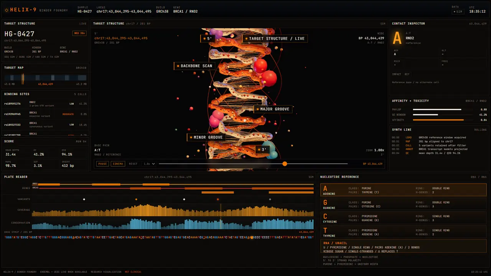
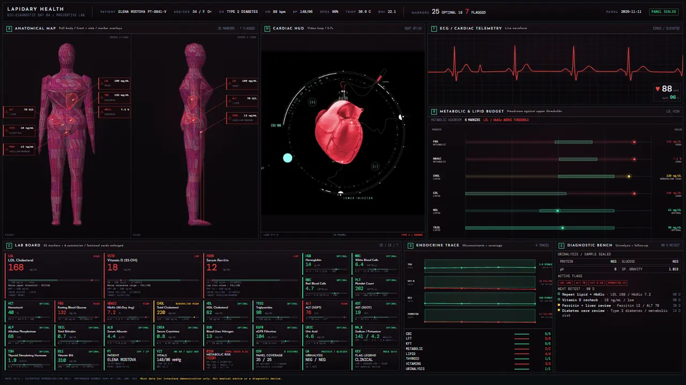
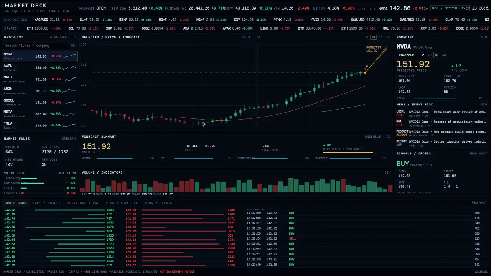
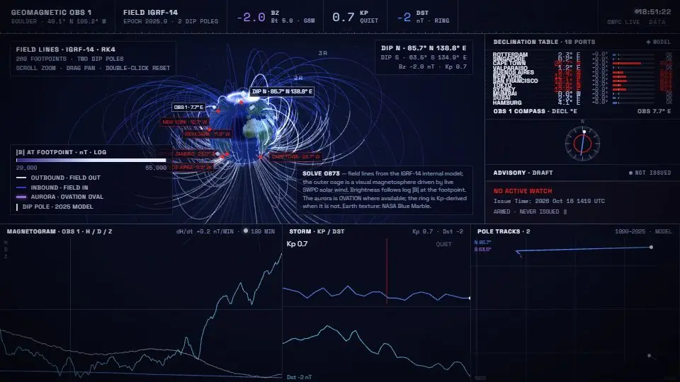
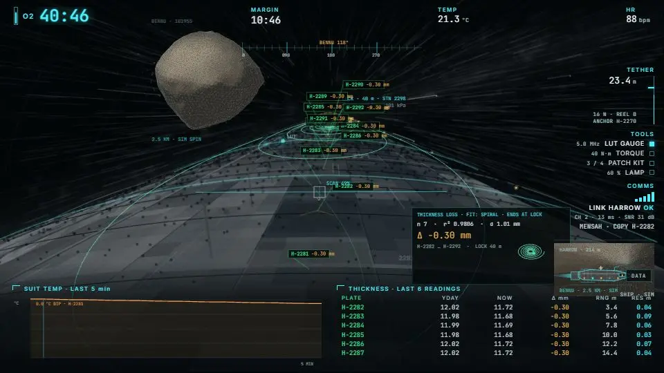
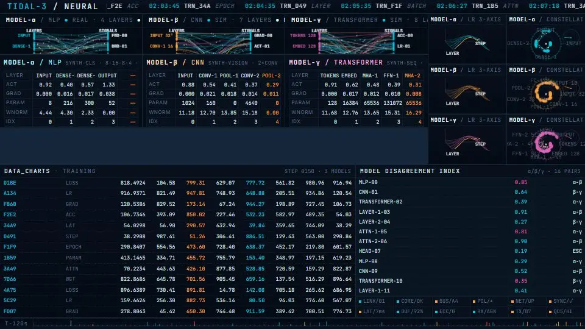
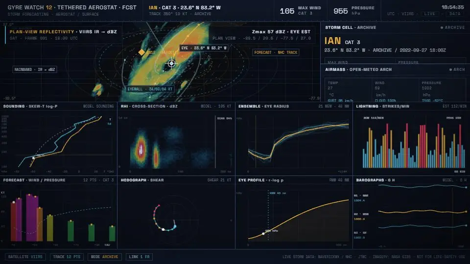
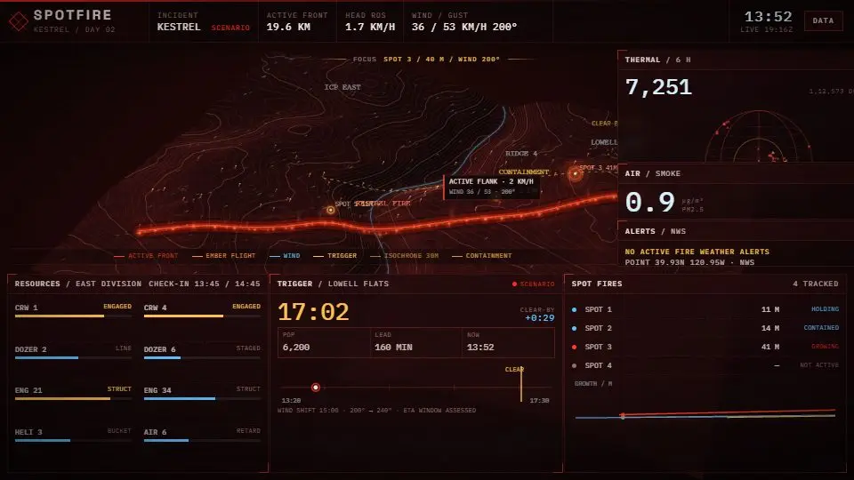
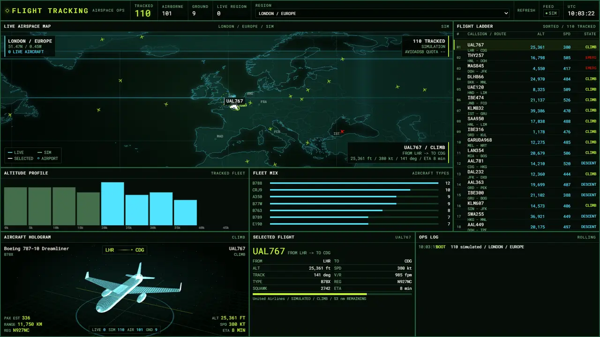

NIGHT CONSOLESDATA SYSTEM INDEX
SYSTEMS09
FORMAT1920 DESKTOP
DEPLOYGITHUB PAGES
UTC--:--:--
CLEAN-ROOM FUI / INSTRUMENT DECKS
SELECT A
DATA SYSTEM
Nine large-format interfaces. Each panel opens a self-contained data scene with its own telemetry, visualization, and live or simulated feeds.

01OPEN SYSTEMLIVE / SIM
02OPEN SYSTEMSIM
03OPEN SYSTEMLIVE / SIM
04OPEN SYSTEMLIVE / MODEL
05OPEN SYSTEMLIVE / MODEL
06OPEN SYSTEMSIM
07OPEN SYSTEMLIVE / SIM
08OPEN SYSTEMLIVE / SIM
09OPEN SYSTEMLIVE REGION / SIM